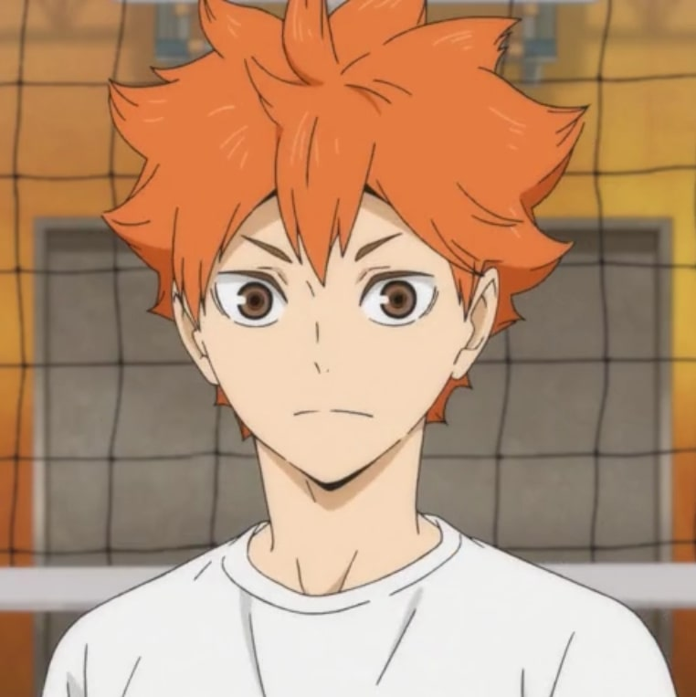

Shoyo Hinata is the main protagonist of the Haikyu!! series by Haruichi Furudate. Hinata was motivated to begin playing volleyball when he witnessed a Karasuno High volleyball player nicknamed the Little Giant scoring points against opponents far bigger than him.

Each keychain is double sided and it also comes with a metal hook. The keychain itself is made out of acrylic.


Tobio Kageyama is the deuteragonist of the Haikyu!! series. For the majority of the series, he was a first-year at Karasuno High School, playing as the starting setter for the boys' volleyball club.